| |
Bazooka Bowls Review
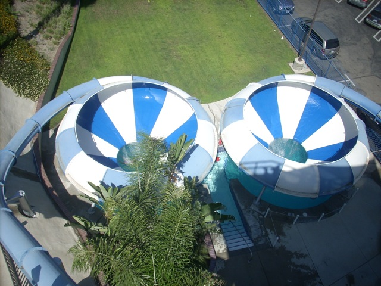
Now this ride is located at Cultus Lake Adventure Park, however, I last rode it at its old home park, Wild Rivers. Yep, we're reveiwing Bazooka Bowls, one of the star attractions at Wild Rivers, and I assume also one of the star attractions at its new home in Cultus Lake. So up the stairs we climb. Once you get to the top of the slide, you just stand there, starring into the blackness of the blue slide, waiting for the signal to go. Once it's clear, we head down the slide. We rapidly accelerate in the dark, as we now know that we have past the point of no return. Then once you fly out into the bowl, we hit the bowl with a loud KER-THUMP!!!!! If you have a fear of getting your back scratched on your local speed slide such as Venom Drop, then you'll have a problem with Bazooka Bowls as it is MUCH harder on your back than any other speed slide, but it's SO TOTALLY worth it as you fly around the bowl multiple times at incredible forces. This ladies and gentelmen, this is the TRUE HELIX OF DEATH!!!!!!! Not a fake helix of death like every other helix of death out there. This is THE HELIX OF DEATH!!!! There is NOTHING ELSE LIKE IT!!! =D (Except for the hundreds of Bazooka Bowl Clones around the world.) After swirling arund and around in the bowl, you simply get flushed out through the hole in the bowl. Now, you can come out in any position. Sometimes, you plop in sitting down, sometimes, your on your side. and sometimes your head first. After plopping in the pool, you swim out until the shallow water where you can get out and get back in line. I miss Bazooka Bowls (And Wild Rivers, F*CK YOU IRVINE COMP!), and I'm so happy that it found a new home in Cultus Lake. They even kept the same name and color scheme. Aww, that makes me extra happy. Get out there and ride it or check out one of its clones very soon.
9/10
Location: Cultus Lake Adventure Park
I'm not sure when Bazooka Bowls opened at Wild Rivers
Bazooka Bowls was relocated to Cultus Lake Adventure Park in 2013
Built by: ProSlide
Last Ridden: July 18, 2011
I have ridden this exact same ride at the following waterparks.
Golfland Sunsplash (Roseville)
Bazooka Bowls Photos
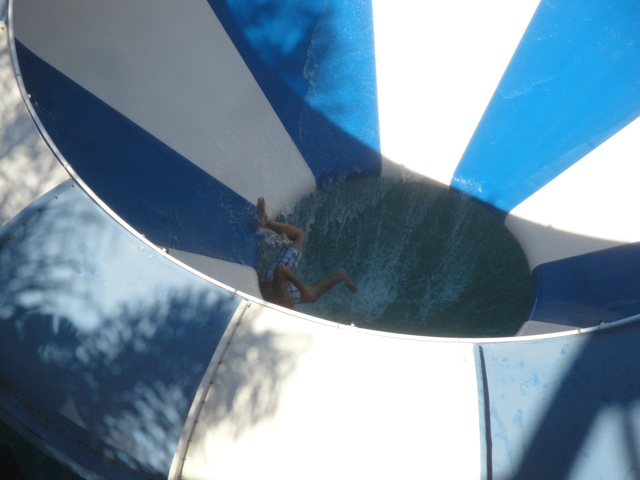
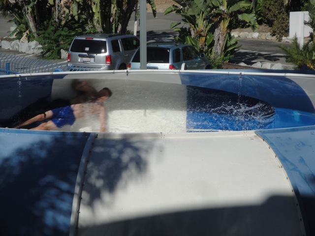
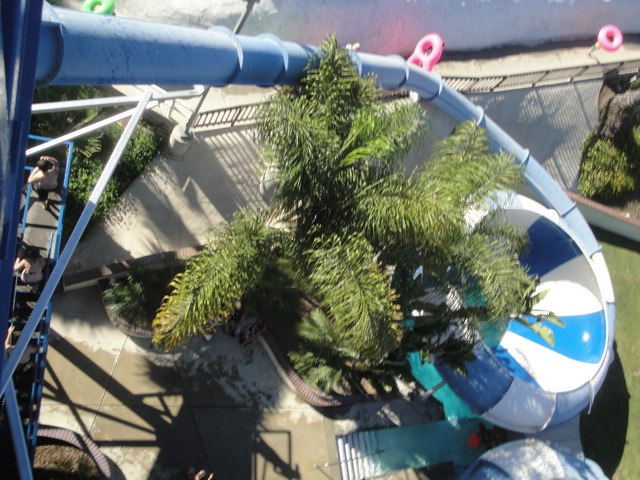
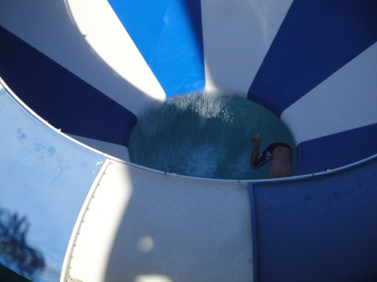
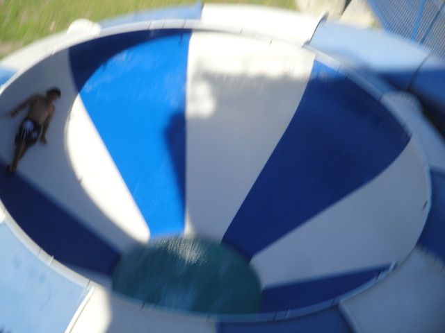
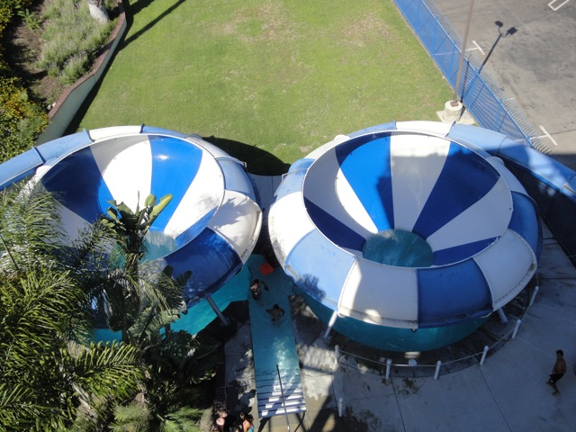
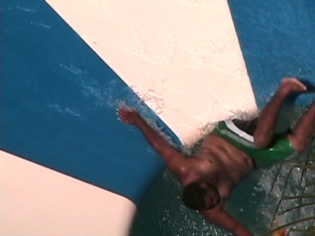
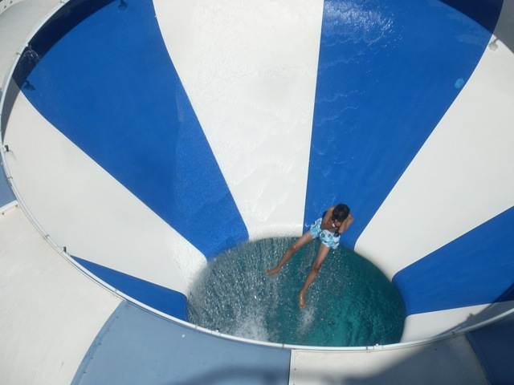
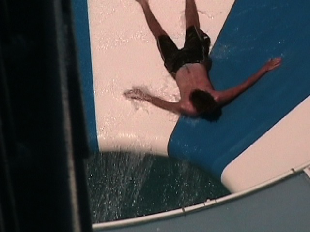
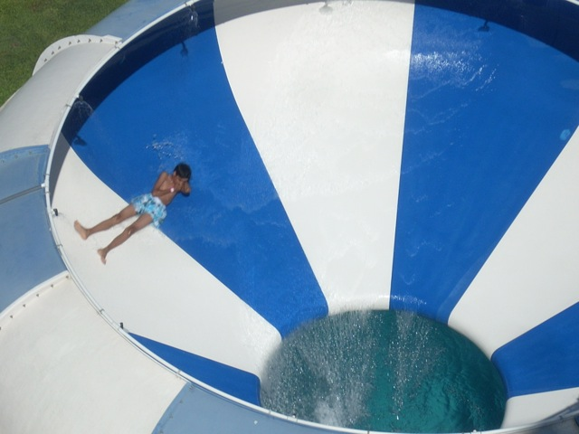
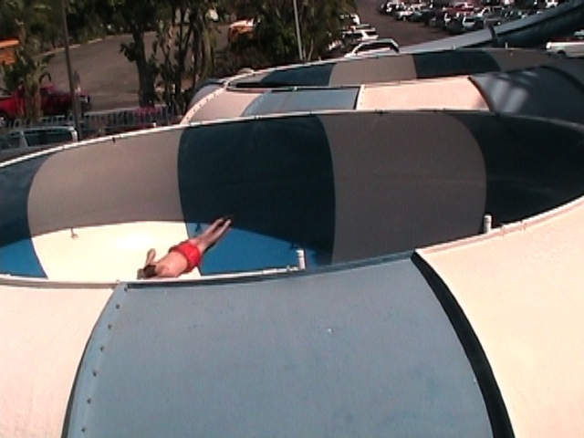
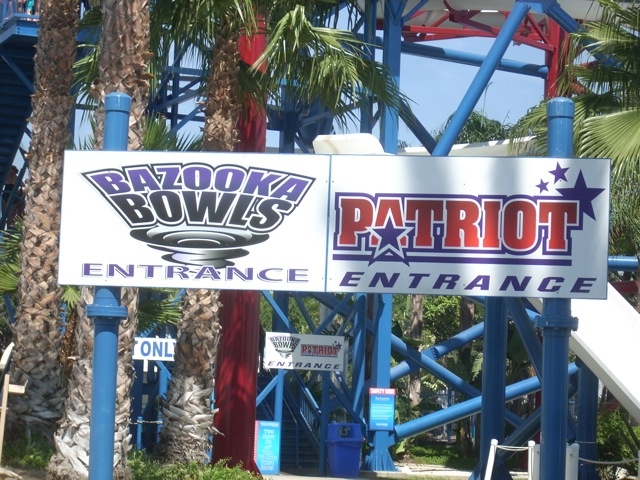
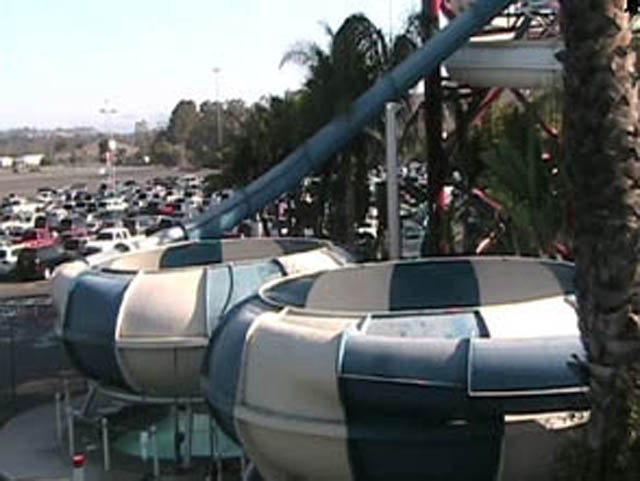
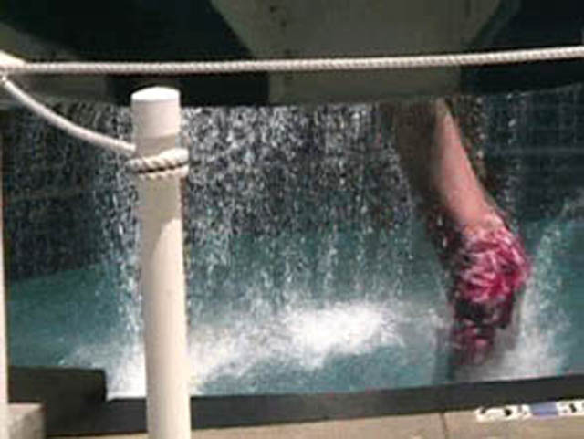
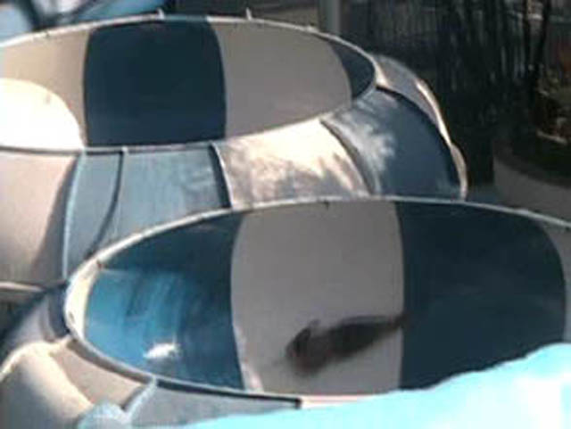
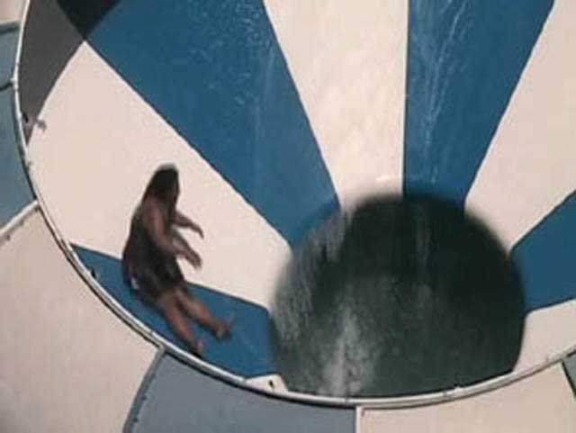
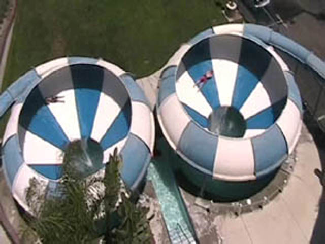
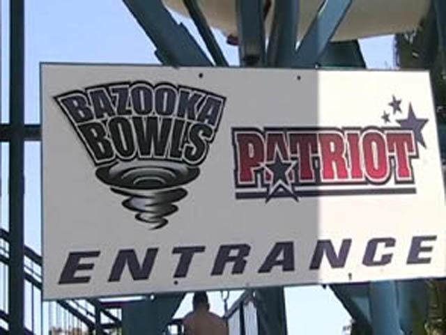
|